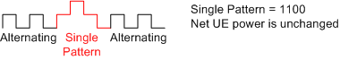
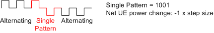

Administrable TPC patterns are transmitted via the downlink DPCH.
- A new pattern following an all 0 or all 1 pattern starts at the beginning of the first frame after the current frame.
- A new pattern following an alternating pattern always starts at the next frame boundary. There, the last bit of the alternating pattern is different from the first bit of the new pattern. It can be the first or second frame after the current frame.
- A running continuous pattern is immediately interrupted by a new pattern. The new pattern starts at the beginning of the first frame after the current frame.
Example:
Single pattern + alternating can be used to first change the (average) UE power by a definite number of steps and then maintain the new (average) UE power. Due to the rules quoted above, the first and the last bit in <Pattern> cancel the effect of the preceding and the following bits. The rules tend to stabilize the net UE power and minimize the effect of <Pattern>.
It is easy to show this mechanism for power control algorithm 1 where the UE power changes after each slot by a definite step size. If the first and the last bits in <Pattern> are different, the net UE power change caused by these bits is zero. Example:

If both the first and the last bit in <Pattern> are 1 (0), then the net UE power change equals the step size multiplied with 1 (–1). The effect of 1 bit is canceled. Example:

For each of the central bits, 0 and 1 in <Pattern> causes a UE power change of the step size multiplied with –1 and 1, respectively. The central bits are all bits except the first and the last bit.